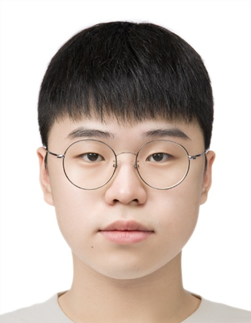

B.S. in Physics (Minor in Electrical Engineering), KAIST · Expected Feb 2027
heromj27@kaist.ac.kr · 📍 Daejeon, Korea
I am a physics undergraduate at KAIST (B.S. expected February 2027, minor in Electrical Engineering). I am interested in studying galactic ecosystems, especially from the perspective of observational cosmology. Since joining Prof. Junhan Kim's OBSCAL group at KAIST in Fall 2024, I have pursued two complementary questions about how galaxies and their black holes grow:
I am applying to Ph.D. programs in astronomy & astrophysics for Fall 2027. My long-term goal is to become an observational astronomer who works across observations, simulations, and instrumentation.
Selected coursework and lecture notes.
📂 Archiving in progress
Course materials from 2020–2021 are not yet organized and will be added as I recover them.
Memories and moments.
Description